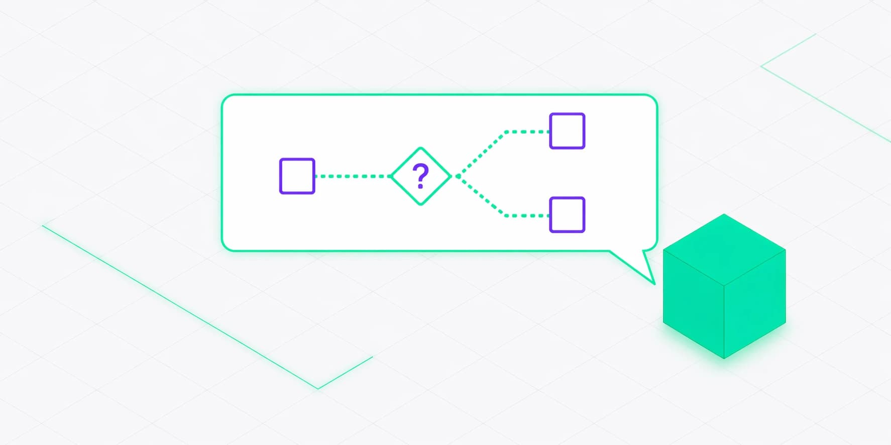

Axiom Chain Discovery Bot:
AI Discovery and Proposal Generation
An internal AI tool that scales Axiom Chain's sales discovery process — a goal-based orchestrator that holds a real commercial conversation, renders its live understanding on a React Flow whiteboard, and writes a tailored Notion proposal when the conversation is done.
Stack
Next.js, Vercel AI SDK, MongoDB, Notion API
Role
Internal Product Build
Scope
Design, Frontend, AI Orchestration, Integrations, Infrastructure

The Mission
“To scale Axiom Chain's discovery process — gathering proposal-quality information from a prospect at any hour, in a voice that sounds like a commercially literate operator, not a survey.”
Core Objectives
- Goal-based orchestrator state machine with pathway-specific goals unlocking dynamically
- Isolated classifier LLM call for structured answer judgement, separate from the conversational model
- Live Discovery Map on React Flow rendering the AI's understanding as it fills in
- Two-phase Notion proposal generation with instant page creation and background content fill
The Challenge
Discovery is the highest-leverage part of a services sale and the most repetitive — standard calls burn 30 to 60 minutes pulling out the same baseline information every time. Scripted chatbots feel robotic: they restate understanding, then ask the next item off a list, and the prospect tunes out. A real discovery bot needs to press on vague answers without becoming an interrogation, sound like a commercially confident senior rather than a checklist, and still produce output structured enough to generate a real proposal from — not notes someone has to rewrite.
Answer classification and conversational response cannot share an LLM call — mix them and the classifier gets soft or the conversation gets robotic, so they have to run as separate concerns. Context windows are finite: a 20-turn discovery blows past token limits if you send the full history each call, forcing summarised and windowed context. Serverless execution limits mean proposal generation — 30 to 60 seconds of LLM work — cannot block the HTTP response, so it must run after the page returns. Deep conversations that fail to resolve need a soft landing via depth capping, partial briefs, and a Calendly handoff when the bot is the wrong tool for the job.
What We Built
Goal-Based Orchestrator State Machine
Discovery modelled as a set of goals with explicit satisfaction criteria rather than a scripted question tree. Tracks phase, pathway, current goal, clarification counts, and depth counter — with three pathway branches (Entrepreneur, Augmentation, Squad Delivery) unlocking pathway-specific goals dynamically.
Dual-LLM Conversation & Classification
A separate classifier LLM call judges every answer as clear, vague, or a correction against explicit criteria, while the conversational model writes its own question phrasing each turn. Token-budgeted context assembly replaces raw message history with summaries of answered goals plus an 8-message sliding window so conversations stay lean at any length.
Live React Flow Discovery Map
A whiteboard-style visualisation that grows as the conversation progresses — rendering the AI's structured understanding across Scope, Technical, Business, and Goals sections. Manual 2-column grid layout with colour-coded sections, animated edge routing, and cliff-note fragments rather than formal sentences.
Two-Phase Notion Proposal Generation
Template selector reads scope maturity from discovery answers and picks Pre-Dev, Retainer, or Combined. Creates a Notion page instantly with a title and placeholder, then fills full content in the background via Vercel's after() API — using a markdown-to-Notion block converter that supports headings, lists, tables, and dividers with 100-block batch appending.
Technical Architecture
A Next.js application with an orchestrator state machine at the core, backed by MongoDB for conversation persistence and full session resumption. An LLM provider abstraction supports OpenAI (OAuth and API key) and Anthropic transparently, with frontend streaming via the Vercel AI SDK. Proposal generation runs in the background using Vercel's after() API and writes directly to Notion via a markdown-to-block converter.
Real Impact.
Axiom Chain Discovery Bot delivered a production-grade AI tool that replaces the repetitive opening phase of a sales call — qualifying prospects at scale and producing structured proposals our team refines rather than writes from scratch. It also stands as a working reference for what a serious AI-augmented operational tool looks like end to end.
- Engagement Pathways
- 3
- Classifier + Conversation
- Dual-LLM
- Notion Proposal Pipeline
- Two-Phase
- Production Tool
- Internal
- Region
- Australia